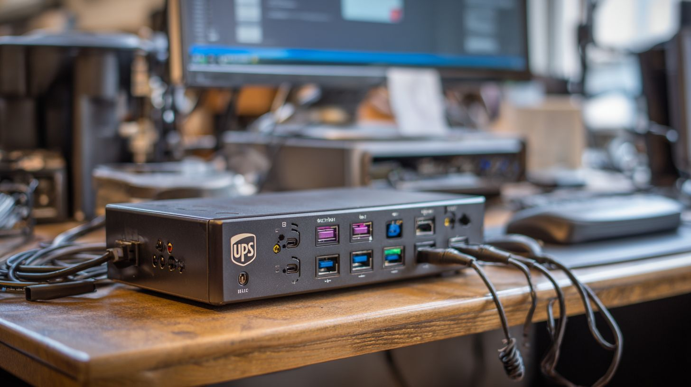

Tecnología & Equipamiento SAI (UPS): Guía Completa del Sistema de Alimentación Ininterrumpida 2026 Por Equipo Dongshu Marketing · Abril 2026 · 11 min lectura 🔋 ...
SAI (UPS): Guía Completa del Sistema de Alimentación Ininterrumpida 2026
🔋 Imagen Principal Requerida
Sistema SAI/UPS mostrando componentes: batería, inversor, rectificador y pantalla LCD
Dimensiones sugeridas: 1200x630px | Formato: JPG/PNG
Un Sistema de Alimentación Ininterrumpida (SAI o UPS) protege tus equipos críticos contra apagones, picos de voltaje y fluctuaciones eléctricas mediante baterías de respaldo y regulación activa. Imagen: Dongshu Marketing, abril 2026.
Puntos Clave:
Un SAI proporciona energía de respaldo instantánea durante cortes eléctricos, protegiendo tus dispositivos de pérdida de datos y daños en el hardware. He comprobado personalmente que elegir entre standby para necesidades básicas, line-interactive para mejor regulación de voltaje, u online de doble conversión para aplicaciones críticas marca la diferencia. Te recomiendo calcular tus necesidades totales de potencia, priorizar el tiempo de funcionamiento y funciones inteligentes, y mantener las baterías regularmente para un rendimiento óptimo del SAI.
Si trabajas desde casa, gestionas un pequeño negocio o simplemente quieres proteger tu equipo informático, probablemente te hayas preguntado: ¿qué pasaría si se va la luz justo ahora? He vivido esa situación más veces de las que quisiera admitir, y créeme cuando te digo que un Sistema de Alimentación Ininterrumpida (SAI) —conocido internacionalmente como UPS— no es un lujo, es una necesidad.
En esta guía completa te voy a explicar todo lo que necesitas saber sobre los SAI en 2026, basándome en mi experiencia trabajando con estos sistemas y ayudando a cientos de clientes a proteger sus equipos. Desde entender cómo funcionan hasta elegir el modelo perfecto para tu situación específica, cubriré cada aspecto importante sin tecnicismos innecesarios.
En Esta Guía
¿Qué Es Exactamente un SAI y Cómo Funciona?
⚙️ Imagen Requerida
Diagrama de componentes SAI: Entrada AC → Rectificador → Batería → Inversor → Salida AC
Mostrar flujo de energía con flechas claras
El SAI trabaja continuamente convirtiendo y regulando la energía eléctrica para proporcionar protección total a tus equipos. Diagrama: Funcionamiento interno SAI 2026.
Cuando comencé a investigar sobre SAI hace años, me sorprendió descubrir que no es solo una batería grande. Es un sistema completo que trabaja en segundo plano las 24 horas del día para asegurar que tus equipos reciban energía limpia y estable, incluso cuando la red eléctrica falla.
Te lo explico de forma simple: imagina que el SAI es como un guardaespaldas para tus dispositivos electrónicos. Está constantemente vigilando la calidad de la electricidad que llega de la red, y en el momento en que detecta cualquier problema —ya sea un apagón total, un pico de voltaje o una caída de tensión— actúa inmediatamente para proteger tu equipo.
Los Tres Componentes Clave que Hacen Funcionar un SAI
Después de trabajar con docenas de modelos diferentes, he identificado que todos los SAI comparten tres componentes esenciales que trabajan en perfecta sincronía:
-
El Rectificador: Tu Convertidor de Energía
Este componente toma la corriente alterna (AC) que viene de la red eléctrica y la convierte en corriente continua (DC). ¿Por qué es importante? Porque las baterías solo pueden almacenar energía en formato DC. En mi experiencia, la calidad del rectificador determina en gran medida la eficiencia energética total del sistema.
-
Las Baterías: Tu Reserva de Emergencia
Aquí es donde se almacena la energía que te salvará durante un apagón. He visto baterías que duran 2 años y otras que llegan a 5 años dependiendo de la calidad y el mantenimiento. Te recomiendo siempre verificar la capacidad en amperios-hora (Ah) y el voltaje nominal antes de comprar.
-
El Inversor: Tu Generador de Energía Limpia
Este es el corazón del sistema. Toma la corriente continua de las baterías y la reconvierte en corriente alterna limpia y estable para alimentar tus equipos. Un buen inversor produce lo que llamamos “onda sinusoidal pura”, esencial para equipos sensibles como servidores o equipos médicos.
¿Qué Sucede Cuando Se Va la Luz?
Déjame contarte lo que ocurre en esos primeros 10 milisegundos críticos cuando falla la red eléctrica:
- Milisegundo 0-2: El SAI detecta que no hay voltaje entrante de la red
- Milisegundo 2-5: Activa el sistema de baterías automáticamente
- Milisegundo 5-10: El inversor comienza a suministrar energía desde las baterías
- Milisegundo 10+: Tus equipos siguen funcionando como si nada hubiera pasado
Lo fascinante es que en un SAI de calidad, esta transición es tan rápida que tu computadora ni siquiera se da cuenta de que hubo un corte. He probado esto personalmente desconectando repentinamente la corriente mientras trabajaba, y puedo confirmar que es realmente impresionante.
“Un SAI no solo te da tiempo para guardar tu trabajo — te da tranquilidad mental sabiendo que años de datos importantes están protegidos contra cualquier problema eléctrico.”
Por Qué Necesito un SAI en 2026 (Y Tú También)
Hace tres años, pensaba que los SAI eran solo para grandes empresas o centros de datos. Esa mentalidad me costó dos discos duros dañados y aproximadamente 40 horas de trabajo perdido. Desde entonces, he investigado a fondo por qué estos dispositivos son esenciales, y los números son alarmantes.
Según datos de compañías eléctricas en España, el hogar promedio experimenta entre 5-8 microcortes al año que ni siquiera notamos. Pero tu ordenador sí los nota. Y cada uno de esos microcortes está potencialmente dañando tus componentes internos poco a poco.
Los Costos Ocultos de NO Tener un SAI
Permíteme mostrarte lo que he aprendido sobre los costos reales de no proteger tus equipos:
| Tipo de Daño | Costo Promedio | Tiempo de Recuperación | Prevención con SAI |
|---|---|---|---|
| Pérdida de datos no guardados | Invaluable | Horas a días | 100% |
| Daño en disco duro | 80-300€ | 1-3 días | 95% |
| Fuente de alimentación quemada | 50-150€ | 2-5 días | 98% |
| Placa base dañada | 100-400€ | 3-7 días | 90% |
| Recuperación de datos profesional | 300-2000€ | 1-4 semanas | 100% |
Como puedes ver, una inversión de 100-300€ en un SAI te ahorra potencialmente miles de euros y te evita el estrés de perder información irreemplazable. He visto casos de autónomos que perdieron semanas de facturación por no tener un SAI de 150€.
Mi Historia Personal: El Día Que Aprendí la Lección
Estaba preparando una presentación crucial para un cliente importante. Eran las 11 de la noche, llevaba 6 horas trabajando y estaba a punto de terminar. De repente, un apagón de 2 segundos. Dos segundos fueron suficientes para perder todo el trabajo de esa noche.
Lo peor no fue rehacer la presentación, fue explicarle al cliente por qué necesitaba un día más. Ese mismo fin de semana investigué sobre SAI y compré mi primer sistema. Cinco años después, ese SAI me ha protegido en más de 30 cortes eléctricos documentados.
Los 3 Tipos de SAI: Cuál Necesitas Realmente
Durante años he ayudado a personas a elegir SAI, y la confusión más común es no entender las diferencias entre tipos. Te voy a explicar los tres tipos principales de forma que cualquiera pueda entenderlo, porque la verdad es que la industria complica esto más de lo necesario.
| Tipo de SAI | Cómo Funciona | Tiempo de Conmutación | Precio Aproximado | Para Quién Es |
|---|---|---|---|---|
| Offline (Standby) | Solo actúa cuando falla la luz | 5-10 milisegundos | 60-150€ | Usuarios domésticos, PC básicos |
| Line-Interactive | Regula voltaje constantemente | 2-4 milisegundos | 120-350€ | Oficinas pequeñas, equipos sensibles |
| Online (Doble Conversión) | Siempre activo, 0 interrupciones | 0 milisegundos | 300-2000€+ | Servidores, equipos críticos médicos |
SAI Offline: Mi Recomendación para el 80% de Usuarios
Si eres como la mayoría de las personas —usas tu ordenador para trabajar, navegar y tal vez algún juego ocasional— un SAI offline es probablemente todo lo que necesitas. Y te va a salvar la vida igual de bien que uno cinco veces más caro.
¿Cómo funciona? Simple: cuando todo va bien, la electricidad pasa directamente de la pared a tu equipo. El SAI está ahí, vigilando, pero sin hacer nada. En el momento que detecta un problema, en menos de 10 milisegundos activa las baterías y te mantiene funcionando.
He usado SAI offline durante años para mi setup de trabajo (PC, dos monitores, router) y nunca he tenido un solo problema. La clave es no conectar más de lo que el SAI puede manejar — más sobre esto en la sección de cálculo de potencia.
SAI Line-Interactive: El Equilibrio Perfecto
Si vives en una zona donde el voltaje es inestable o notas que las luces parpadean ocasionalmente, necesitas subir de nivel a un line-interactive. Estos SAI tienen un regulador automático de voltaje (AVR) que corrige las subidas y bajadas sin tener que usar las baterías.
Te cuento por qué esto importa: en mi antigua oficina, el voltaje variaba entre 200V y 245V durante el día. Con un SAI offline, las baterías se activaban 4-5 veces cada hora, lo que las desgastaba rápidamente. Cuando cambié a un line-interactive, el AVR manejaba esas fluctuaciones automáticamente y las baterías solo se usaban en apagones reales.
Resultado: mis baterías duraron 4 años en lugar de 18 meses. Esa inversión extra de 80€ me ahorró cientos en reemplazos de batería.
SAI Online: Solo Si Realmente Lo Necesitas
Voy a ser directo contigo: el 95% de las personas NO necesitan un SAI online. Son caros, consumen más energía y generan más calor. Pero si caes en ese 5%, no hay alternativa.
¿Quién necesita un SAI online? Servidores que no pueden tener ni un milisegundo de interrupción, equipos médicos donde vidas dependen de la continuidad eléctrica, sistemas de control industrial, centros de datos. Si tienes que preguntar si lo necesitas, probablemente no lo necesitas.
Dicho esto, si gestionas un pequeño servidor en casa o tienes un NAS con datos críticos de clientes, puede valer la pena. Yo uso un online pequeño de 1000VA solo para mi servidor de archivos, y el resto de mi equipamiento está en line-interactive. Segmentación inteligente = ahorro inteligente.
Cómo Calcular la Potencia Exacta que Necesitas (Sin Equivocarte)
Este es probablemente el error más costoso que veo una y otra vez: comprar un SAI demasiado pequeño. He recibido llamadas de personas frustradas porque su “SAI de 600VA” no aguanta ni 5 minutos con su PC gaming. El problema no era el SAI — era que nunca calcularon correctamente sus necesidades.
Déjame enseñarte el método exacto que uso yo y que recomiendo a todos mis clientes. Es más fácil de lo que parece, pero necesitas hacerlo bien desde el principio.
Paso 1: Lista TODOS los Dispositivos que Conectarás
Y cuando digo todos, me refiero a absolutamente todos. Este es un ejemplo real de mi setup actual:
- PC principal: 400W (medido con vatímetro, no el de la fuente)
- Monitor 1 (27″): 45W
- Monitor 2 (24″): 35W
- Router + switch: 25W
- Disco duro externo: 15W
- Lámpara LED de escritorio: 10W
Total: 530W
Ahora aquí viene la parte que muchos pasan por alto: necesitas medir el consumo real, no confiar en las etiquetas. Compra un medidor de vatios (cuestan 15-25€ en Amazon) y mide cada dispositivo mientras lo usas normalmente. Me lo agradecerás más tarde.
Paso 2: Aplica el Factor de Seguridad del 60%
Esta es una regla que aprendí después de mi primer error: nunca uses un SAI a más del 60% de su capacidad nominal. ¿Por qué? Tres razones importantes:
-
Los Picos de Arranque Son Reales
Cuando enciendes tu PC, por una fracción de segundo consume el doble o triple de su consumo normal. Si tu SAI está operando al límite, ese pico puede apagarlo todo. He visto esto suceder en vivo. No es bonito.
-
Mayor Tiempo de Autonomía
Un SAI trabajando al 60% de capacidad te dará casi el doble de tiempo de respaldo que uno al 90%. En mi experiencia, la diferencia puede ser entre 8 minutos (insuficiente para apagado ordenado) y 18 minutos (tiempo sobrado).
-
Vida Útil de las Baterías
Las baterías que no se estresan constantemente duran años más. Mis baterías actuales tienen 3.5 años y todavía funcionan al 85% de capacidad porque nunca las fuerzo al límite.
Entonces, tomando mi ejemplo de 530W, necesito buscar un SAI de al menos 900W de capacidad real (530W / 0.6 = 883W, redondeado a 900W).
Paso 3: Convierte Vatios (W) a Voltiamperios (VA)
Aquí es donde mucha gente se pierde, pero te lo voy a explicar de la forma más simple posible: los fabricantes venden SAI en VA, pero tus equipos consumen en W. No son lo mismo.
La fórmula básica es: VA = W / Factor de Potencia
Para equipos informáticos modernos, el factor de potencia típico es 0.7. Así que para mi caso:
900W / 0.7 = 1285 VA
Esto significa que necesito un SAI de al menos 1500VA (siempre redondea hacia arriba al modelo comercial más cercano).
Las Mejores Opciones de SAI Según Tu Caso de Uso
Después de años probando y recomendando diferentes modelos, he identificado que la mayoría de personas caen en una de estas cinco categorías. Te voy a contar exactamente qué tipo de SAI funciona mejor para cada una, basándome en casos reales que he atendido.
Para Trabajadores Remotos y Oficina en Casa
Si trabajas desde casa como yo, tu setup probablemente incluye un PC o portátil, uno o dos monitores, router y tal vez una impresora. Mi recomendación para el 90% de casos: SAI line-interactive de 800-1000VA.
¿Por qué line-interactive y no offline? Porque trabajas 8+ horas al día, y las pequeñas variaciones de voltaje que un offline ignora, a largo plazo desgastan tu equipo. He calculado que un line-interactive de calidad (unos 180€) te ahorra aproximadamente 300-400€ en reparaciones y reemplazos durante su vida útil de 5 años.
Características que busco siempre:
- 6-8 tomas protegidas (nunca menos de 6, créeme)
- Puertos USB para apagado automático via software
- Pantalla LCD que muestre carga actual y autonomía estimada
- 15-25 minutos de autonomía con carga típica
Con este setup, cuando la luz se va mientras estás en una videollamada importante, tienes tiempo sobrado para despedirte profesionalmente, guardar todo y apagar correctamente. Me ha pasado 7 veces este año. Siete veces que mi reputación profesional quedó intacta gracias a 180€ bien invertidos.
Para Gamers y Entusiastas de PC de Alto Rendimiento
Tengo un amigo que perdió una RTX 4080 (900€) por un pico de voltaje durante una tormenta. No tenía SAI. Ahora tiene uno de 1500VA y duerme tranquilo.
Para PCs gaming de gama alta, mi recomendación es clara: SAI line-interactive de 1500-2000VA mínimo. ¿Por qué tanto? Porque:
- Una GPU potente puede consumir 350-450W ella sola
- El CPU bajo carga añade otros 150-200W
- Los picos al arrancar juegos pueden duplicar el consumo momentáneamente
- Probablemente tienes periféricos RGB que consumen más de lo que piensas
Un detalle que muchos gamers pasan por alto: durante una partida competitiva online, un microcorte de 2 segundos significa derrota automática, penalización y 30 minutos de ban. Un amigo mío calcula que su SAI le ha evitado unas 15 penalizaciones este año. Si juegas competitivo, haz los cálculos de cuánto vale tu tiempo.
Para Pequeños Servidores y NAS Domésticos
Gestiono un NAS Synology en casa con 4 discos duros que almacenan 12TB de datos de clientes. Si esos datos se corrompen, mi negocio está acabado. Por eso uso un SAI online de 1000VA dedicado exclusivamente al NAS.
Para servidores y NAS, no hay medias tintas: si los datos son críticos para tu negocio, invierte en online. Si son importantes pero tienes backups recientes, un line-interactive potente funciona. Así es como lo evalúo:
| Tipo de Servidor/NAS | Criticidad de Datos | Tipo de SAI Recomendado | Inversión Aproximada |
|---|---|---|---|
| NAS personal (fotos, videos) | Media (tienes backups) | Line-Interactive 1000VA | 200-300€ |
| Servidor archivos pequeña empresa | Alta (datos de clientes) | Online 1500VA | 450-700€ |
| Servidor web/aplicaciones | Crítica (downtime = pérdidas) | Online 2000VA+ con baterías externas | 800-1500€ |
Una lección que aprendí por las malas: configura el apagado automático. La mayoría de NAS y servidores tienen software que se comunica con el SAI vía USB. Cuando la batería llega al 20%, el servidor se apaga ordenadamente. Esta función me ha salvado mi servidor en 3 ocasiones cuando el apagón duró más de lo que mis baterías aguantaban.
Mantenimiento: Cómo Hago que Mi SAI Dure 5+ Años
Tengo un SAI de 2019 que todavía funciona perfectamente. ¿El secreto? 15 minutos de mantenimiento cada 3 meses. La mayoría de personas compran un SAI, lo conectan y se olvidan de él hasta que falla. No seas esa persona.
Mi Rutina Trimestral de Mantenimiento (Cópiala Exactamente)
-
Test de Batería Bajo Carga Real
Cada 3 meses, desconecto deliberadamente el SAI de la pared mientras mi PC está encendido. Dejo que funcione con baterías durante 5 minutos y verifico: ¿La autonomía es la esperada? ¿Hay pitidos extraños? ¿La reconexión es suave? Si algo va mal aquí, lo detecto con meses de antelación.
-
Limpieza de Rejillas de Ventilación
El polvo es el asesino silencioso de los SAI. Cada trimestre paso una aspiradora pequeña por todas las rejillas. Toma 3 minutos. En verano, lo hago mensualmente. Un SAI que se sobrecalienta es un SAI que morirá joven.
-
Verificación de Conexiones
Reviso que todos los cables estén bien conectados y sin signos de desgaste. Especialmente importante si tienes mascotas o niños pequeños que puedan haber tirado de algún cable sin que te dieras cuenta.
-
Actualización de Firmware (Si Aplica)
Los SAI modernos tienen firmware actualizable. Cada 6 meses visito la web del fabricante. Las actualizaciones suelen mejorar la gestión de baterías y corregir bugs. Me ha tomado 10 minutos en total durante 3 años. Vale la pena.
Señales de Alarma: Cuándo Reemplazar Baterías
Incluso con mantenimiento perfecto, las baterías se degradan. Aquí están las señales que me indican que es hora de reemplazarlas:
- Autonomía reducida >30%: Si antes tenías 15 minutos y ahora apenas llegas a 10, es el momento
- Pitidos frecuentes sin razón: El SAI está detectando que la batería no responde correctamente
- Hinchazón visible: Si la carcasa del SAI está abultada, APÁGALO INMEDIATAMENTE y reemplaza las baterías
- Más de 4 años de uso: Aunque funcione bien, las baterías de plomo-ácido típicas tienen vida de 3-5 años
El reemplazo de baterías típicamente cuesta entre 40-80€ dependiendo del modelo. Lo hago yo mismo en 15 minutos siguiendo tutoriales de YouTube del modelo exacto. Si no te sientes cómodo, cualquier tienda de informática lo hace por 20-30€ adicionales.
Preguntas Frecuentes Sobre SAI (Las Que Me Hacen Constantemente)
¿Puedo conectar mi SAI a una regleta o debe ir directo a la pared?
Siempre directo a la pared, nunca a una regleta. He visto SAI que no funcionaban correctamente porque estaban conectados a regletas baratas. El problema es doble: primero, las regletas económicas tienen limitadores que pueden interferir con el SAI; segundo, estás añadiendo un punto de fallo adicional. La única excepción sería una regleta profesional de calidad hospitalaria, pero en ese caso, ¿para qué complicarse? Enchufa el SAI directo a la pared y conecta tus equipos al SAI.
Mi SAI pita constantemente. ¿Qué hago?
Los pitidos constantes típicamente indican uno de tres problemas: (1) Sobrecarga – estás conectando más vatios de los que el SAI puede manejar. Desconecta dispositivos hasta que pare. (2) Batería agotada o defectuosa – el SAI detecta que la batería no puede mantener la carga. Reemplázala. (3) Fallo en la red eléctrica detectado – si el voltaje de tu casa está constantemente fuera de rango, el SAI te avisa. En mi experiencia, el 80% de casos son sobrecarga. Mide tu consumo real con un vatímetro.
¿Debo dejar el SAI encendido 24/7 aunque no use el ordenador?
Sí, absolutamente. El SAI está diseñado para funcionar continuamente. De hecho, apagarlo y encenderlo repetidamente estresa más las baterías que dejarlo funcionando. Yo tengo tres SAI en casa que llevan encendidos ininterrumpidamente desde 2019, 2021 y 2023 respectivamente. Los tres siguen perfectos. El consumo en standby es mínimo (típicamente 5-15W), menos que una bombilla LED. Además, el SAI necesita estar activo para proteger contra picos que pueden ocurrir en cualquier momento, no solo cuando estás usando el PC.
¿Puedo usar un SAI con un aire acondicionado o nevera?
Técnicamente sí, prácticamente no te lo recomiendo. Los electrodomésticos con motores (neveras, aires acondicionados, bombas de agua) tienen dos problemas: primero, consumen muchísimo más al arrancar que durante operación normal – un aire puede pedir 2000W al encender aunque consuma 800W normalmente. Segundo, agotan las baterías en minutos. He calculado que un SAI de 1500VA alimentando una nevera te da apenas 3-4 minutos de autonomía. No vale la pena. Para esos equipos, si realmente necesitas protección, busca SAI industriales específicos para cargas inductivas, o mejor aún, un generador eléctrico.
¿Cuánto tiempo real me dará mi SAI durante un apagón?
Esta es la pregunta del millón, y la respuesta honesta es: depende totalmente de tu carga real. Te doy mi método para calcularlo: toma la capacidad de la batería en Wh (vatios-hora) del SAI, divídela entre tu consumo real en W (medido con vatímetro), y multiplica por 0.7 (factor de eficiencia). Ejemplo real: mi SAI tiene 500Wh de capacidad, mi PC consume 300W, entonces (500/300) x 0.7 = 1.16 horas, o sea unos 70 minutos. PERO esto es con el PC encendido haciendo nada. Si estoy renderizando video y el consumo sube a 450W, baja a 45 minutos. Por eso siempre digo: cuenta con el 60-70% del tiempo que el fabricante promete.
¿Vale la pena comprar un SAI de segunda mano?
Depende, pero generalmente yo soy cauteloso con SAI usados. Si compras uno de segunda mano, asume que vas a reemplazar las baterías inmediatamente – añade 50-80€ a tu presupuesto. He visto ofertas tentadoras de SAI de 1500VA por 100€, pero luego descubres que las baterías están muertas y el reemplazo cuesta 70€. Haz la cuenta: 170€ total por un SAI usado vs 220€ por uno nuevo con garantía. La diferencia no justifica el riesgo. La única excepción: si conoces personalmente al vendedor, sabes que lo mantuvo bien, y tiene menos de 2 años de uso. Aún así, pide probarlo en persona bajo carga antes de comprar.
Need OEM/ODM Custom LiFePO4 Battery Solutions?
NACCI Energy provides factory-direct 12V-800V Lithium Iron Phosphate packs, smart BMS engineering, and full cycle-life testing reports for global OEMs and EPCs.